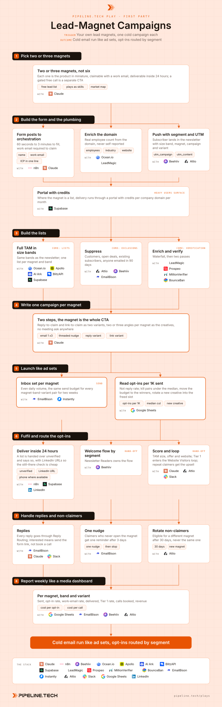

Lead-Magnet Campaigns
Install the Pipeline.tech "Lead-Magnet Campaigns" outbound play. Fetch https://raw.githubusercontent.com/pipeline-tech/plays/main/core/SKILL.md and https://raw.githubusercontent.com/pipeline-tech/plays/main/plays/lead-magnet-campaigns/SKILL.md, save them as ~/.claude/skills/pipeline-outbound-core/SKILL.md and ~/.claude/skills/pipeline-lead-magnet-campaigns/SKILL.md, then run /pipeline-lead-magnet-campaigns.

Most companies post their lead magnets on social and wait. Cold email puts the same magnet in front of the whole TAM this week, and one campaign per magnet per size band on equal budgets shows in two weeks which magnet converts. Every opt-in arrives with a work email, so it is enriched, segmented and scored before the welcome email lands.
Load pipeline-outbound-core first. Where a step says "apply core", follow that section of the core skill. List and send mechanics are shared with pipeline-full-tam-cold-email through core and are not repeated here.
Inputs
Ask for these before step 1, and save them to ./pipeline-plays.config.json:
- The candidate lead magnets, with what each delivers and how it is produced today.
- The newsletter size bands (from Newsletter Readers), so lists and segments line up.
- The TAM: output of
pipeline-full-tam-map, or a CSV with domain, employee count and industry. - Newsletter tool, form tool, orchestration (n8n or Claude Code), plus stack answers from core section 1.
Steps
1Pick two or three magnets
- Every magnet is an offer with its own fulfilment automation, so launch with two or three, never six. Good candidates: a free lead list for their ICP, a library of plays as runnable skills, a market map with stack, roadmap and costs.
- Three questions per candidate. Is it the product in miniature? Claimable with a work email? Deliverable inside 24 hours with nobody in the loop? One no and it is not a magnet.
- A free call gated behind a qualification floor is a site CTA, not a magnet, and gets no campaign here.
- Decide the heavy-user upsell now: a domain that claims lists every month is offered the full universe build for less than they can build it themselves.
2Build the form and the plumbing
- The form takes 60 seconds to 3 minutes and posts to the orchestration layer. Work email is required to claim; a personal address joins the newsletter but claims nothing.
- Enrich the domain for real employee count and industry; self-reported headcount is unreliable.
- Push the subscriber to the newsletter with the size segment set, then to the CRM. Apply core: CRM and alerts.
- One UTM per campaign, variant in
utm_content, so every opt-in is attributed to magnet, band and variant. - Where the magnet is a list, deliver through a portal with credits per company domain per month, so heavy users surface by themselves.
3Build the lists
- Apply core: lists, for the full TAM, split into the newsletter's size bands so dashboard and welcome flow share one band.
- One list per magnet and band. The lists are the audiences; a company sits in one at a time.
- Apply core: exclusions, plus existing subscribers and anyone who has claimed a magnet before.
- Apply core: enrichment and core: verification.
4Write one campaign per magnet
- Apply core: copy and send rules.
- The magnet is the entire ask: "want me to send the list for your ICP?" No call or demo anywhere in the sequence.
- Two variants per magnet. Reply-to-claim: email 1 asks, the reply gets the form link through Reply Routing. Link-to-claim: the threaded nudge carries the link, so email 1 stays link-free per core.
- Two or three angles per magnet are the creatives, differing in opener and proof, not in synonyms.
- Approve plain text, then apply the spintax and QA gate from
pipeline-full-tam-cold-emailstep 5.
5Launch like ad sets
- One inbox set per magnet so deliverability reads per magnet. Apply core: send rules.
- Every magnet-band-variant pair gets the same daily send budget for two weeks, no favourites before the data is in.
- The metric is opt-ins per 1K sent. Reply rate misleads because the link variant converts without a reply.
- At two weeks, kill every pair under the median, move its budget to the pairs above it, rotate a new creative into the freed slot. Repeat fortnightly.
6Fulfil and route the opt-ins
- Deliver every claim inside 24 hours, automated. A list ships unverified and says so in plain words, with LinkedIn URLs so the claimant can verify cheaply.
- The welcome flow for their segment starts on opt-in. Newsletter Readers owns the flows; this play sets the segment.
- Score the signup on TAM size, offer and website. Apply core: tiering. Tier 1s enter the loop Website Visitors owns, with a Slack alert.
- A domain that claims repeatedly gets the step 1 upsell, sent by a person, not an automation.
7Handle replies and non-claimers
- Replies go through Reply Routing. Here "interested" means they want the magnet, so the drafted answer carries the form link only.
- A claimer who never opens the magnet gets one nudge after 3 days, then silence. The newsletter does the rest.
- Non-claimers stay on the list and are eligible for a different magnet after 30 days, never the one they ignored. Log the magnet seen in the CRM.
- Not-interested and unsubscribes apply across every magnet, not just the one answered.
8Report weekly like a media dashboard
- One row per magnet, band and variant: sent, opt-in rate, work-email rate, delivered inside 24 hours, Tier 1 rate, calls booked, revenue, plus inbox and data cost, so cost per opt-in and per call are known per magnet.
- Read it top down. Low opt-in rate indicts the magnet or creative. Low work-email rate indicts the band. Low Tier 1 rate with healthy opt-ins means the wrong company size; move budget to another band.
- Post the table to Slack every Monday with the step 5 kill and scale decisions.
- Apply core: credits and handoff.
Guardrails
- A magnet must be the product in miniature, never a PDF nobody asked for.
- Never gate content to force an opt-in. Forced opt-ins produce dead subscribers.
- Every claim is fulfilled within 24 hours. If that cannot be automated, the magnet is not ready.
- The same domain never sees two magnets in the same month.
- A list handed over unverified says so in plain words, every time.
- The campaigns follow core send rules. Ad-set framing changes the budgeting, not the deliverability rules.
- No meeting ask anywhere in the sequence or the reply. Calls come from the loop and the newsletter.
Example run
User: "/pipeline-lead-magnet-campaigns with the free lead list and the plays library, bands under 11, 11 to 50 and 50 plus"
- Two magnets kept, market map parked. Form, enrichment and newsletter push live, portal credits at 3 list claims per domain per month.
- 48,200 companies split into three bands, 41,600 after suppressing customers, open deals and 2,900 existing subscribers. Six lists, 36,400 verified contacts.
- Two variants and three angles per magnet, 12 campaigns, QA clean, launched on 24 inboxes with equal daily budgets.
- Week 2: 31,000 sent, 0.7% bounce, 196 opt-ins, 6.3 per 1K. Free list in the 11 to 50 band hit 11.2 per 1K on the link variant; plays library under 11 hit 2.1. Three pairs under the median killed, budget moved, one new creative rotated in.
- Week 4: 64,000 sent, 445 opt-ins, 88% work email, all delivered inside 24 hours, 41 Tier 1s into the loop, 9 calls booked, 2 domains at the credit cap offered the upsell.